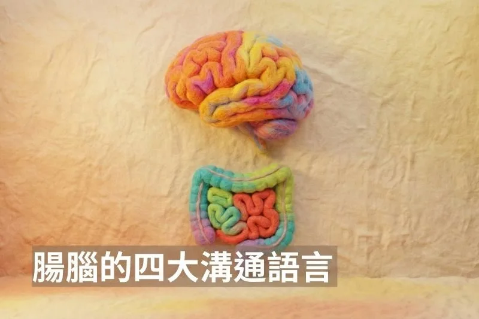

腸腦的四大溝通語言

腸道和大腦有關係，是大家都知道的，但是大腦和腸道是藉由什麼管道溝通，一直都是這幾年醫學界非常火熱的話題。今天看到一篇 2026 年發表在權威期刊《臨床研究雜誌》（The Journal of Clinical Investigation）的最新綜述文章，很完整地講解了這個主題，我整理了其中的內容和大家分享。
作者引用了早至十九世紀到二十世紀等早期生理學的經典文獻，但絕大多數的參考資料集中在過去 10 年的研究，以反映微生物群、神經免疫學及直接神經連結等新技術帶來的最新發現。這篇研究涵蓋了基礎科學的動物模型研究（特別是小鼠實驗）以及人類臨床試驗。結論指出腸道與大腦之間，是由四個高度整合的系統共同運作，以下分別一次幫大家整理這四個系統：
第一，荷爾蒙訊號（Hormonal Signaling）：化學信差的廣播系統 這是腸腦溝通中最傳統也最廣為人知的機制。腸道不僅負責消化，更是人體最大的內分泌器官，其上皮組織中散佈著「腸道內分泌細胞（EECs）」，能分泌超過 30 種不同的荷爾蒙（如 GLP-1、Ghrelin 等）。這些荷爾蒙主要透過兩種路徑傳遞訊息：一是「內分泌路徑」，即荷爾蒙進入血液循環，像廣播一樣傳送到全身及大腦；雖然大腦有血腦屏障（BBB）保護，但某些荷爾蒙擁有專屬的運輸蛋白可通關，或者它們會選擇在血腦屏障較薄弱的區域（如最後區 Area Postrema）登陸，直接作用於大腦。二是「旁分泌路徑」，即荷爾蒙不進入血液，而是直接作用於鄰近的神經末梢（如迷走神經）來傳遞訊號。值得注意的是，人體 90% 的血清素雖由腸道製造，卻無法直接進入大腦，但它們能在周邊神經系統中發揮重要的調節作用。
第二，直接神經連結（Direct Connections）：毫秒級的高速光纖 過去十年來，科學家發現腸道並非只能依賴慢速的荷爾蒙擴散，而是擁有類似大腦突觸的快速傳遞系統。特定的腸道內分泌細胞演化出了類似腳的延伸構造，被稱為「神經足細胞（Neuropod cells）」，它們能直接與神經纖維對接，進行毫秒級的訊息傳遞。這套系統有著精細的分工：在上消化道（如小腸），神經足細胞透過迷走神經向大腦回報營養資訊，甚至能利用不同的神經傳導物質（如谷氨酸代表真糖、ATP 代表代糖）讓大腦瞬間分辨食物的熱量價值；而在下消化道（如結腸），則主要透過脊髓神經傳遞疼痛或腫脹等警示訊號。這種機制讓大腦能即時監控攝入的物質並迅速做出反應。
第三，微生物群（Microbiome）：外來居民的代謝通訊 居住在我們腸道內的數兆細菌，是這場對話中不可忽視的第三方勢力。這些微生物會根據我們攝取的飲食（例如膳食纖維）產生各種代謝產物，如短鏈脂肪酸（SCFAs），這些物質可以直接進入血液循環影響大腦，或是就地調節腸道細胞上的受體。更厲害的是，細菌及其代謝物已被證實能直接操控腸道內分泌細胞，促使其釋放荷爾蒙，甚至能透過激活迷走神經或交感神經通路來改變宿主的行為與生理狀態。此外，當微生物群失衡時，可能會改變腸道上皮的通透性（即腸漏），導致更多的細菌產物滲入體內，進一步干擾腸腦之間的正常通訊。
第四，免疫介導（Immune-mediated）：巡邏監控與發炎記憶 這是一個負責防禦與記憶的機制。腸道內駐紮著大量的免疫細胞（如 T 細胞），它們時刻監視著腸腔內的微生物與外來抗原。最新的研究發現，這些受過腸道環境訓練的 T 細胞甚至具有「遷徙能力」，能從腸道移動到大腦的特定區域（如腦室周圍器官），直接參與大腦的恆定調節。更驚人的是大腦對於腸道發炎具有「記憶性」：腸道的發炎訊號（細胞因子）傳入大腦後，大腦島葉（Insula）的神經元會儲存這種免疫反應的模式；日後即便腸道沒有感染，只要這些神經元被重新活化（例如受到心理壓力刺激），大腦竟能主動重現腸道的發炎狀態，這深刻解釋了為何壓力和情緒會如此劇烈地影響腸道健康。
了解上述的四個系統之後，我們就可以把許多看似不相關的疾病連結在一起，找到共同點。作者提到了許多常見的疾病。首先，腸躁症 (IBS) 源於腸道感覺神經的「過度敏化」，腸嗜鉻細胞與神經足細胞的異常興奮，加上微生物代謝產物的刺激，將正常的腸道訊號放大為劇烈疼痛。其次，發炎性腸道疾病 (IBD) 證實了「壓力促發炎」的生理路徑，大腦透過釋放 CRH 活化腸道膠質細胞，進而指揮免疫細胞釋放 TNF-α 加劇發炎，大腦甚至能「記憶」這種發炎狀態。在神經退化方面，帕金森氏症 (PD) 的病理蛋白被發現可能最早於腸道堆積，並順著迷走神經逆流入侵大腦，這解釋了切除迷走神經為何能降低罹病風險。最後，肥胖則是大腦對飽足荷爾蒙（如 GLP-1、瘦素）產生阻抗，且腸道神經足細胞偵測到糖與油後，透過迷走神經強烈活化大腦的多巴胺獎賞系統，導致攝食調控失靈。
這篇劃時代的綜述研究，再次印證了古希臘醫學之父希波柯拉底（Hippocrates）那句流傳千年的名言：「所有疾病都始於腸道（All diseases begin in the gut）」。雖然這句話在過去兩千年間曾被現代醫學忽略，但隨著神經免疫學與微生物研究的突破，我們終於看清了其背後的科學真相。腸道不再只是一個負責消化食物的孤島，而是透過荷爾蒙、神經、微生物與免疫系統，與大腦進行著永無止境的對話。這一發現也為未來的治療開啟了全新大門——無論是利用 GLP-1 藥物來調節代謝，或是透過鳥苷酸環化酶-C 促效劑來緩解腸道神經的過度興奮，未來的醫學將不再只是「頭痛醫頭，腳痛醫腳」，而是透過修復這條繁忙的「腸腦熱線」，找回身心整體的健康平衡。
文獻連結 https://www.jci.org/articles/view/196346
（本文由我規劃架構與觀點，並協同 AI 校正與潤飾語句）
 空腹小雞跟思思醫師一起斷食，順便養一隻小雞來養小雞 →
空腹小雞跟思思醫師一起斷食，順便養一隻小雞來養小雞 →
好朋友早餐信
一週一封：《健康駭客週報》這集的研究重點，加上家醫專欄這週的新文章。免費，隨時可以退訂。
延伸閱讀

飲食換了，腸道菌隔天就不一樣
哈佛 2014 年研究讓受試者短期吃純動物性或純植物性飲食，發現腸道菌相隔天就明顯改變，停止後兩天內即恢復基線。

腸道菌，直接控制你的粒線體
文中整理 Gundry《腦腸悖論》的觀點：腸道菌透過短鏈脂肪酸、血清素與內毒素影響粒線體，建議以多酚等飲食保護粒線體。

巧克力修復過勞的腸道
2023 年 Nutrients 研究發現職業足球員高強度訓練會使腸漏指標上升，每天吃 40 克黑巧克力一個月則讓指標幾乎不變。